¿is kreativ?
Is kreativ es una mente en constante movimiento que crea desde la curiosidad y la creatividad. Con la meta de transformar todo tipo de ideas en proyecciones que inspiren y evolucionen.
Being creative is easy!





Is kreativ es una mente en constante movimiento que crea desde la curiosidad y la creatividad. Con la meta de transformar todo tipo de ideas en proyecciones que inspiren y evolucionen.
Being creative is easy!
Este portafolio digital reúne mis proyectos más destacables, de la carrera. Mostrando mi proceso de investigación, conceptualización, desarrollo y proyección
Cada trabajo forma parte de la construcción de mi identidad como diseñadora. Es un espacio pensado para inspirar y compartir.


look at me, look at me
 Instagram
Instagram Tiktok
Tiktok Youtube
Youtube Behance
Behance Pinterest
Pinterest